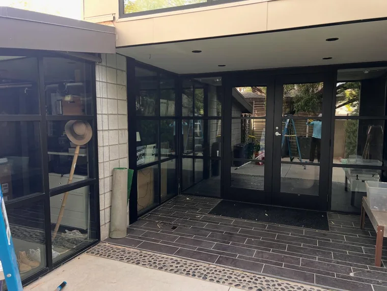
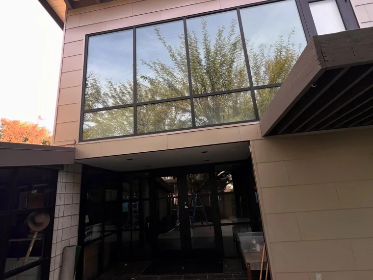

“From start to finish their professionalism and attention to detail were outstanding.”
Aminata TC DemaihGoogle review
Window cleaning
Interior and exterior glass, tracks, sills and screens. Purified water through a fed pole reaches second storey panes with no ladder marks on the wall and no spotting once it dries.
Homes and businesses. One visit or on a schedule.
Pressure washing
Driveways, walkways, patios, pool decks and block walls. Desert dust and hard water staining come off without chewing up the surface underneath.
Pressure matched to the surface, every time.


Gutter cleaning
Debris cleared, downspouts flushed, and the run checked for sag and separation while we are up there. Monsoon season is a bad time to find out a gutter is packed.
Recent jobs
around Phoenix
Every photograph on this page is our own work on a real property. No stock, nothing staged.




Watch a pane
get cleaned
Three reels straight from @pane_solutions_llc. Tap one to play it.
“My windows have never looked better. Completely streak free.”
“The team was punctual, professional, and incredibly thorough. They took the time to ensure every window was done right.”
Marcus BayeGoogle review“Answer and his team did a wonderful job doing my windows. Will be using Pane Solutions yearly.”
Gee NayouGoogle review“I took a chance and they did an incredible job, on the spot. Great work, quality service, solid price.”
Michael MorfordGoogle reviewTell us what needs cleaning.
Free estimate
515.525.4127
Emailanswergaye22@gmail.com
Service areaPhoenix, Arizona
Instagram@pane_solutions_llc